Yalan cast - introducing
Melike Karaca (Aslihan Güner)
Melike 20 yıl boyunca hapiste kızı uğruna ayakta kalan güçlü bir kadındır. Melike’nin tahliye olduktan sonra büyük bir yalanın ortasına düşecek ve büyük bir dram yaşayacaktır. Melike hapisteyken önce liseyi bitirmiş sonra da İstanbul Üniversitesi Hukuk fakültesini okumuştur. Yıllarca kızına kavuşma hayaliyle yaşamış ve tek önceliği kızına annelik yapmaktır.
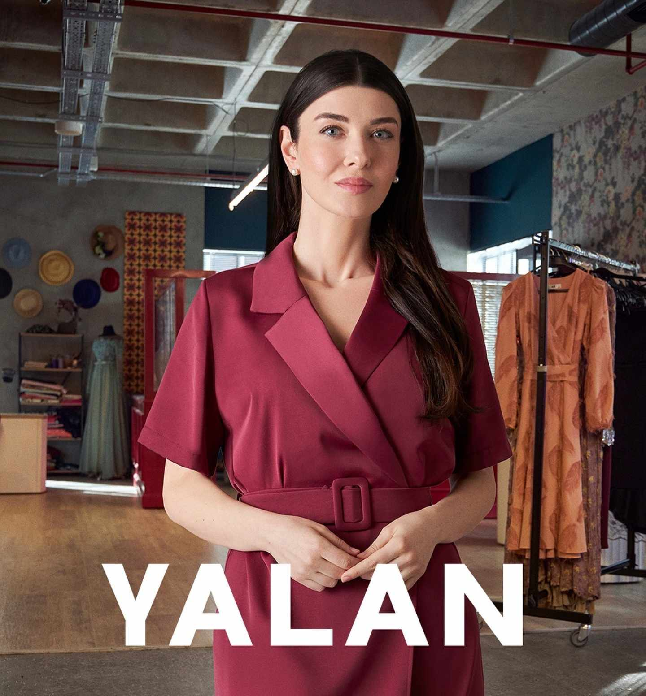Duru Aksoy (Eylül Tumbar)
Duru Melike’nin öz kızıdır. Daha bebekken annesi hapse girince teyzesi Duru’yu ünlü modacı Berrin Aksoy’a evlatlık verilmiştir. Duru şimdilerde zengin bir hayat yaşasa da hiç bir zaman zengin çocuğu olmamıştır. Duru lüks yaşamak yerine hayata değer katmak için savaşmaktadır.
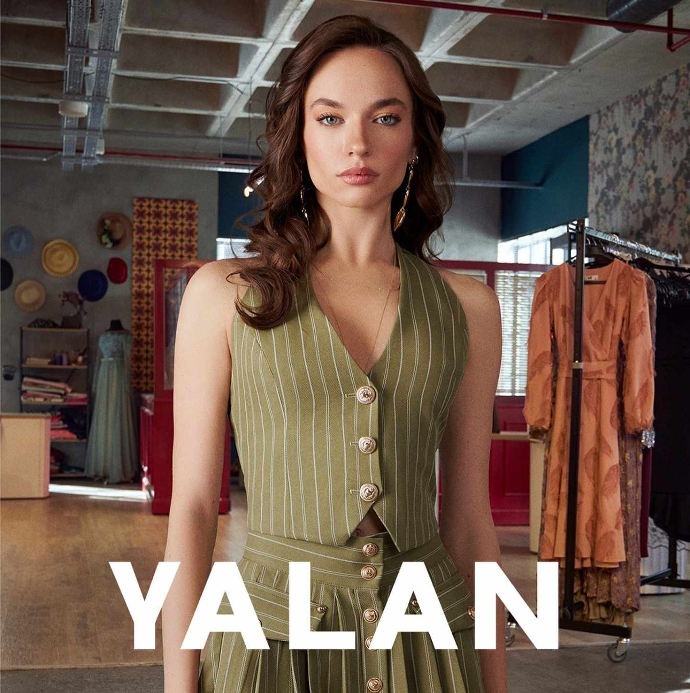Kadir Karaca (Feyyaz Duman)
Kadir Melike’nin öldürdüğü iddia edilen kocası Kenan’ın abisidir. Yıllarca Melike’den kardeşinin intikamını almak için beklemiştir. Kadir ünlü bir mücevher ustasıdır. Kadir Melike’yi tanıdıktan sonra ona aşık olur. Kadir cesur bir adamdır.
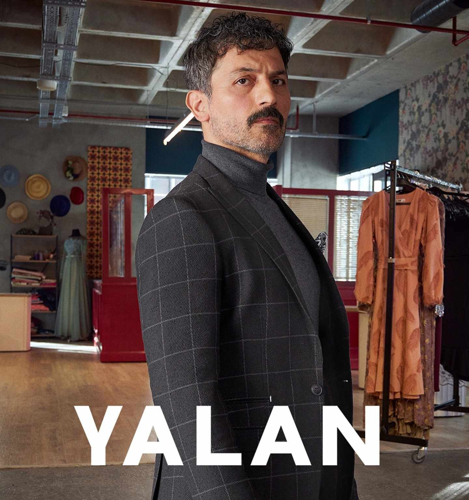Berrin Aksoy (Özge Borak)
Berrin Aksoy ünlü bir modacıdır. Melike’nin kızı Duru’yu zamanında satın almış büyütmüştür. Şimdilerde psikolojik sorunları vardır; öfke patlamaları yaşamaktadır. Haluk da eşinin psikolojik tedavi almasını istemektedir. Hazal’ın hayatına girmesinden sonra iyice Berrin kontrolden çıkar.
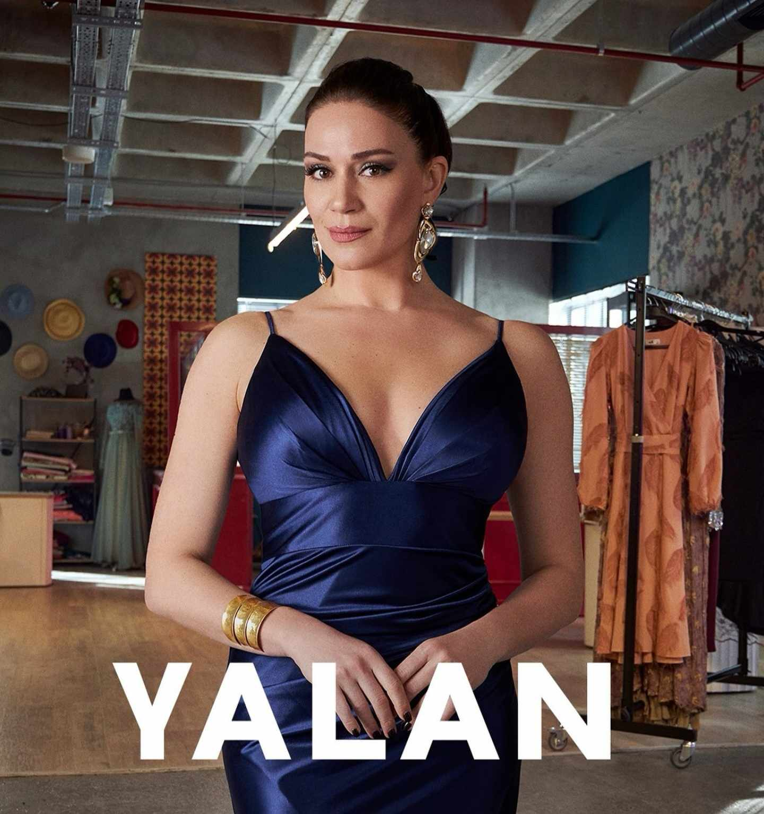Hazal Yildiz (Serra Pirinç)
Hazal - Cengiz ve Hülya’nın öz kızıdır. Zeki, kararlı ve manipülatif biri. Içten içe duygusal olan Hazal, suça bulaşma eğilimindedir ve kazandıkça kaybetmeye başlar.
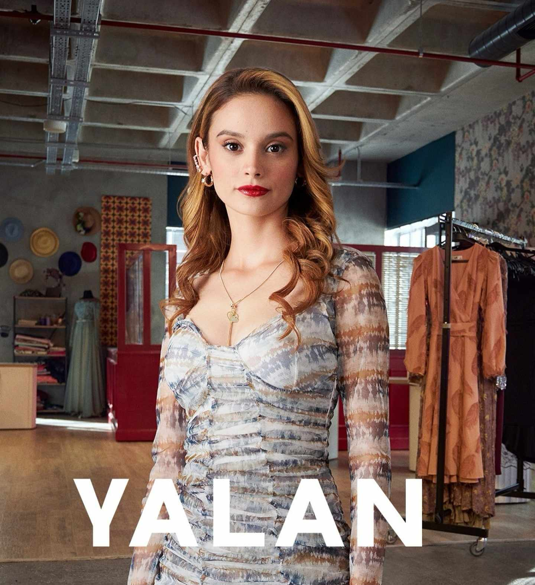Hülya Yildiz (Yesim Ceren Bozoglu)
Hülya Cengiz’in eşi Melike’nin de ablasıdır. Kocası Cengiz ile birlikte Melike’nin öz kızı Hazal’a Duru ismini koyarak Berrin’e satmışlardır. Hülya kocasına çok aşıktır; Aslında Hülya tüm bu hataları kocasına olan aşkı yüzünden yapmıştır.
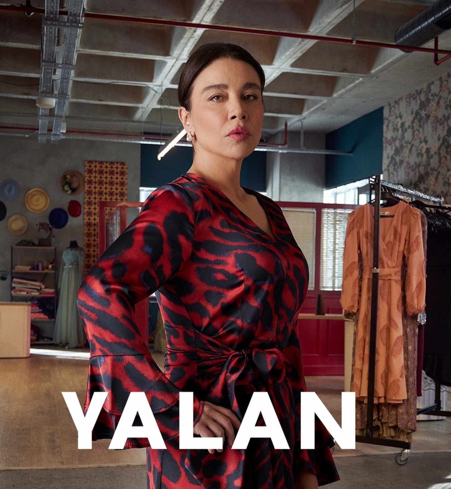Cengiz Yildiz (Emir Benderlioglu)
Cengiz'in para için yapmayacağı șey yoktur. Gerçekten sevdiği tek insan ise karısı Hülya'dır. Melike’nin kızı Hazal’ı zengin bir aileye satmıştır. Kendi kızını ise Melike’ye Hazal olarak göstermişlerdir.
Kerim Kaleli (Atakan Hosgören)
Kerim yurt dışında eğitim görmüş yakışıklı ve zengin bir gençtir. Kerim zengin bir adam olan Emin beyin oğludur. Emin Bey ile de Duru’nun üvey babası Haluk eski dosttur. Hazal ve Duru arasında sıkışıp kalan Kerim, yaşadığı çelișkilerle mücadele ederken, içindeki iyilik ve merhamet duygularını korumaya çalışır.
Volkan Bilgen (Ozan Yigit)
Zengin bir aileden gelmesine rağmen bir türlü tatmin olmayı beceremeyen Volkan, istediği her seyi elde etmeye alişkın olduğu için Hazal'i da elde etmeye çalışır ancak bunu șantajla yapması olayların daha da karışmasına neden olur.
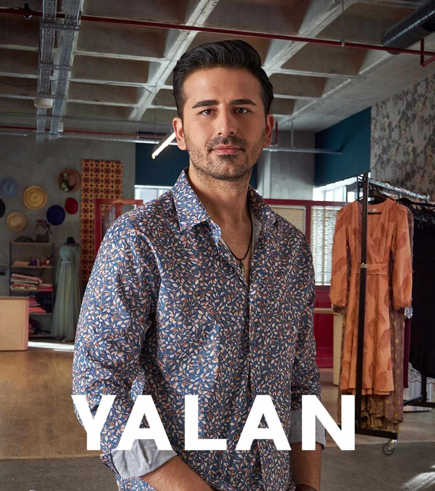Tunç (Noyan Uzer)
Duru'nun kıskanç sevgilisi.
Haluk Aksoy (Kubilay Tunçer)
Dürüst ve iyi niyetli bir adam olan Haluk, ailesi için her turlu fedakarligi yapmaya hazirdr. Fakat ondan saklananlara yüzleşmek üzereyken büyük bir manipülasyonun kurbanı olacaktır.
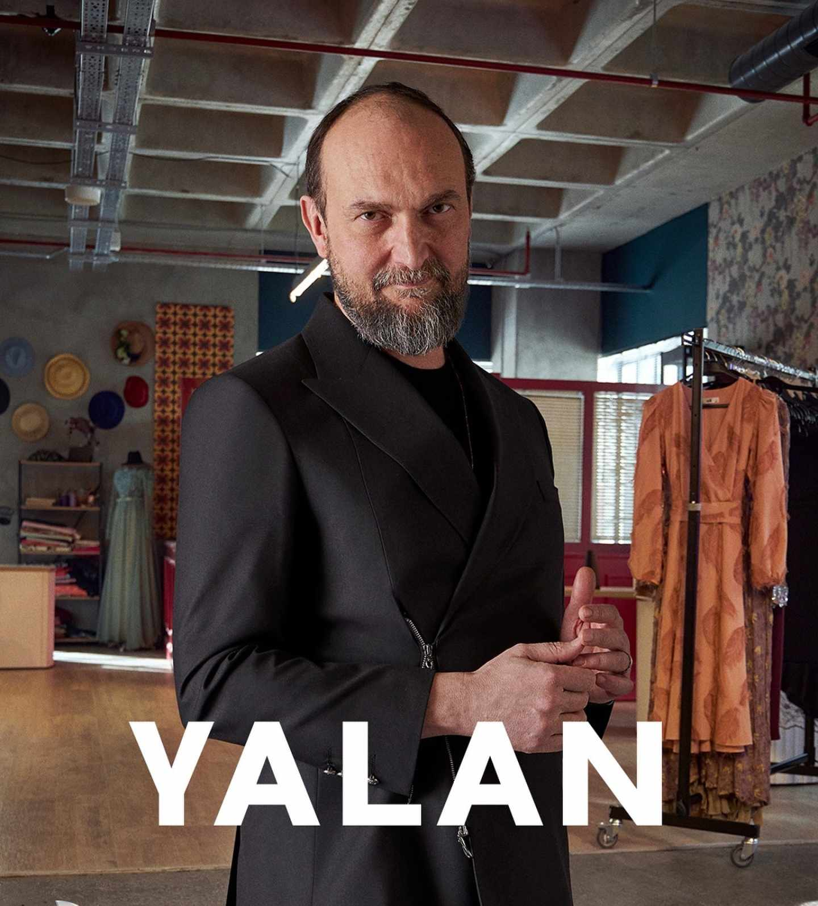Emin Kaleli (Renan Bilek)
Emin Kerim’in babasıdır. Zengin bir adamdır. Kumaş işi ile ilgilenmektedir; fakir fukara ve yolda kalmışların yarımcısı olan iyi kalpli bir adamdır. Hapisten çıkanlara da iş verir.
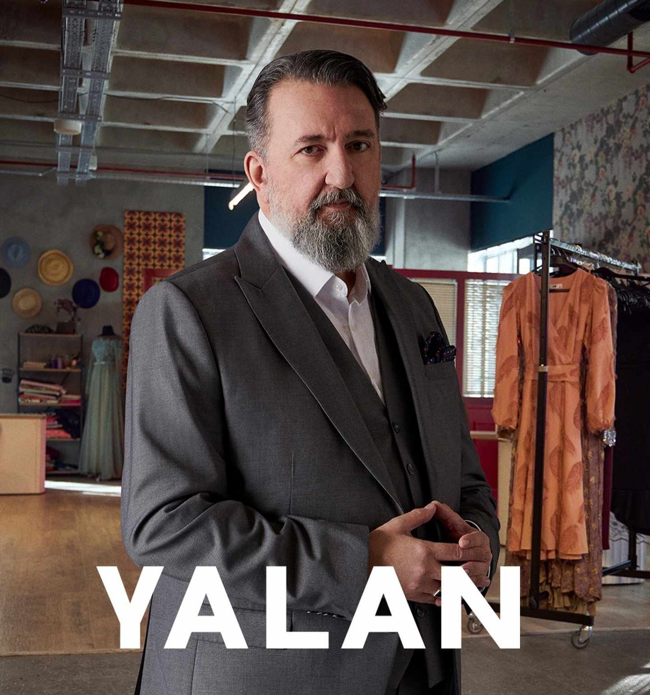Zehra Karaca (Zeynep Eronat)
Kenan ve Kadir’in annesidir. Melike’nin oğlu Kenan’ı öldürdüğünden emin olunca onun hapse girmesi için elinden geleni yapmıştır Yillarca içinde bir evlat kaybetmenin acısıyla yaşamıştır. "Felaketimiz oldu" dediği Melike'den intikam almanın peşindedir.
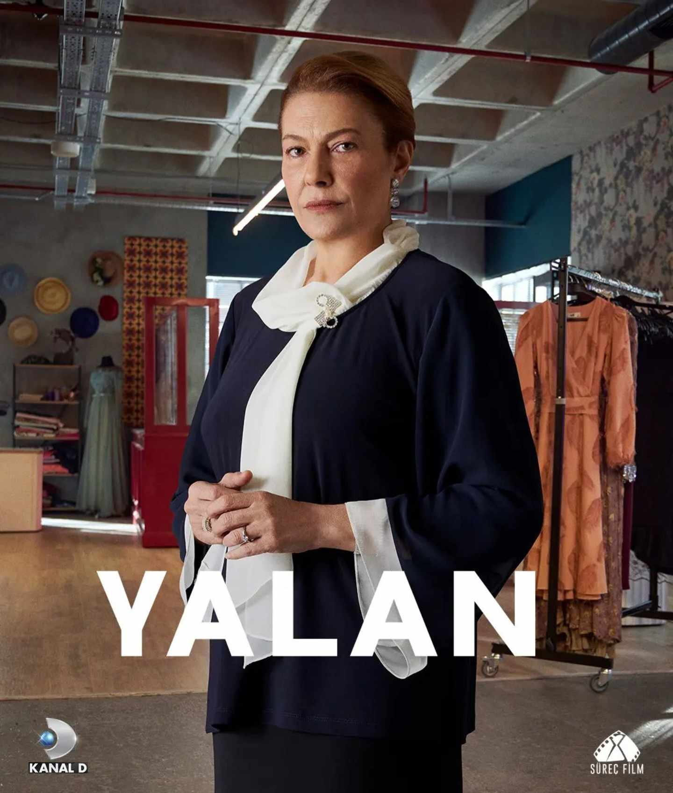Rabia (Aylin Kılıçaslan)
Rabia Emin bey'in yanında çalışan usta başıdır.
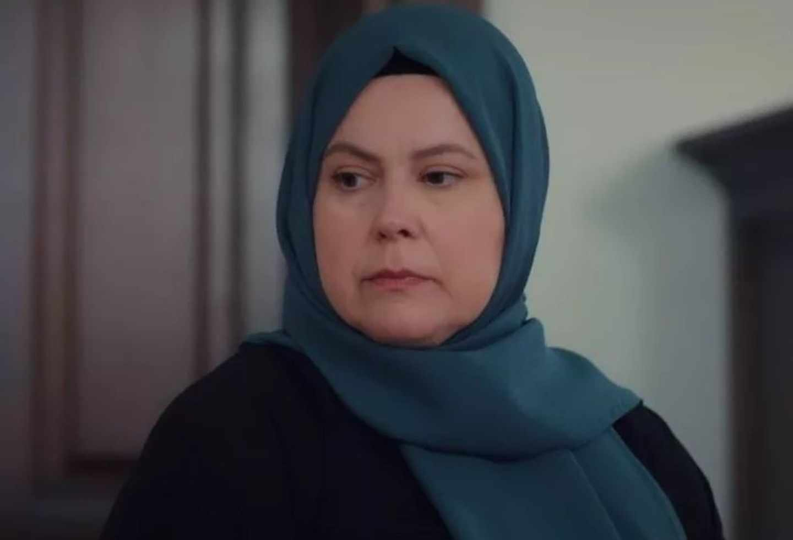Seher (Beste Bereket Önal)
Kadir'in eşi.
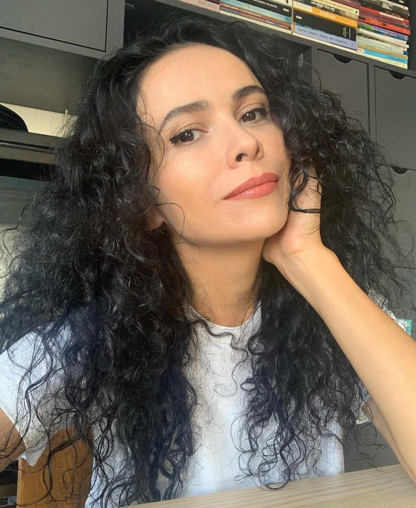Kenan (Metehan Dilaver)
Kenan Melike’nin eşidir. Herkes Kenan’ı Melike’nin öldürdüğünü düşünse de aslında kızları doğduktan sonra katledilmiştir.
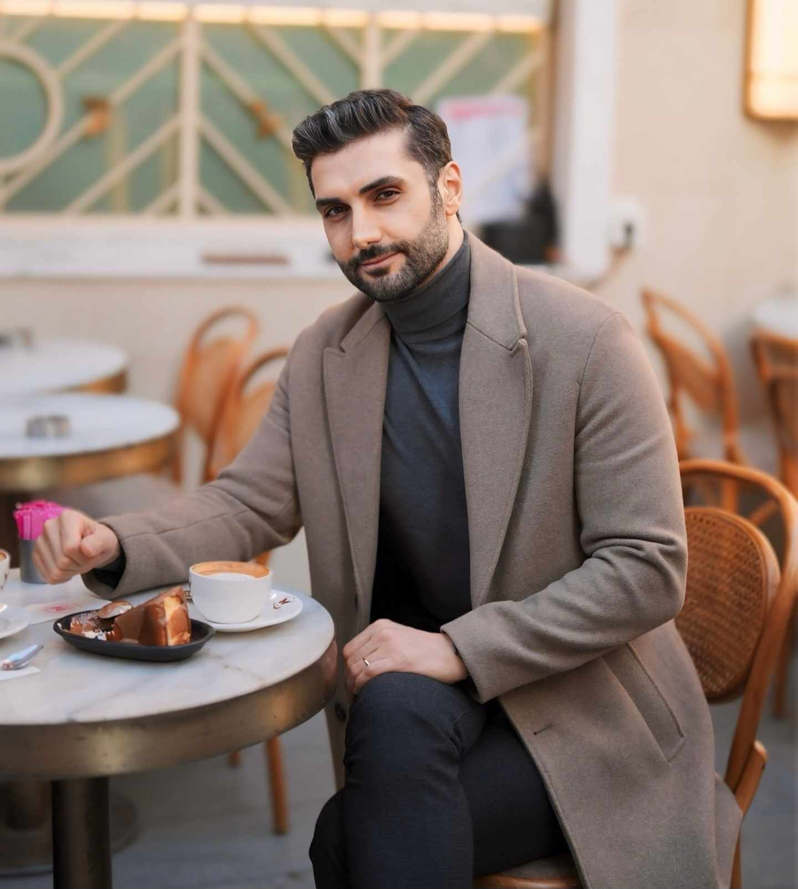Şefika (Sabriye Kara)
Şefika Melike’nin annesidir. Melike’nin başına gelenlerden sonra yatalak kalmıştır.
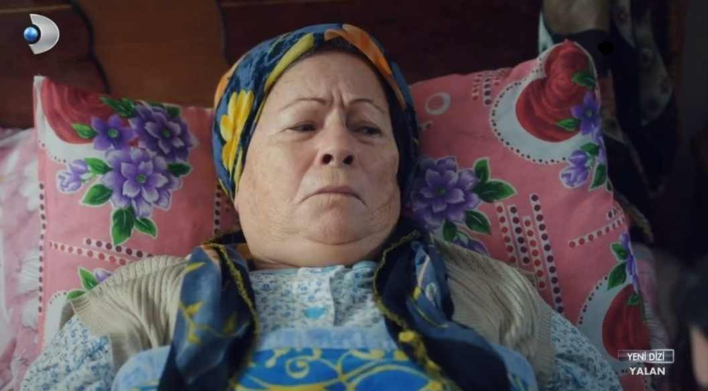Nevcan Su Özel
Berrin Aksoy’ın ofisinde çalışan ofisboydur.
Tuna (Samet Kaan Kuyucu)
Bir noktada Tuna Duru'nun sevgilisi dizinin gergin atmosferinde hem yardımcı rol oynuyor hem de karakterin duygusal dengesini etkiliyor.
Yusuf Kaleli (Ahmet Tansu Tasanlar)
Yusuf Kaleli, Yalan dizisinde başrol karakterlerinden biridir. Bu karakter, diziye dram ve gerilim katacak şekilde tasarlanmış ve izleyicinin ilgisini çekecek şekilde derin bir kişiliğe sahip olarak öne çıkmaktadır. Yusuf, geçmişiyle ilgili sırlar taşıyan ve bu sırları gizlemeye çalışan bir adamdır. Ancak, onun bu karanlık geçmişi, dizi boyunca çeşitli olaylara ve duygusal çatışmalara yol açar. Yusuf'un hikayesi, hem aşk hem de intikamla örülü bir yapıdadır, bu da onun ilişkilerini karmaşık ve bazen tehlikeli hale getirir.
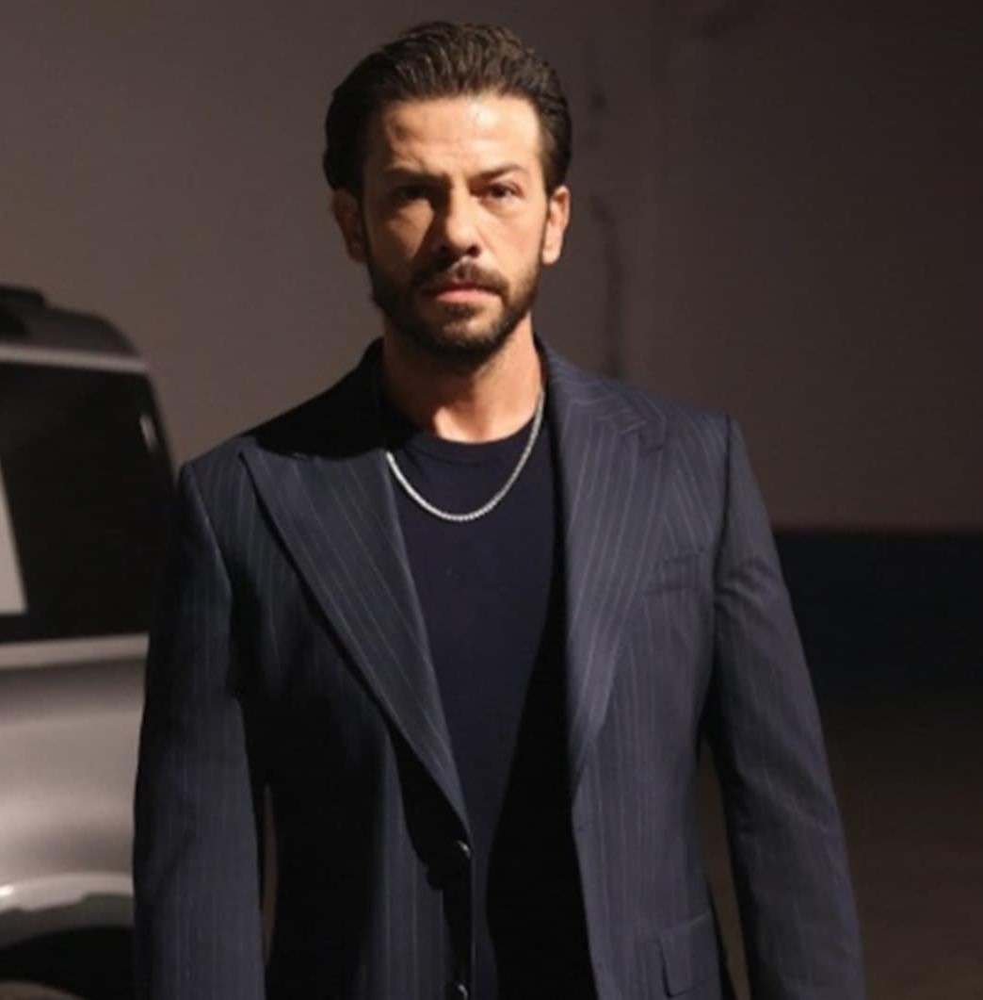Yaman Savcı (Gokberk Demirci)
Yalan dizisinde Yaman Savcı, önemli karakterlerden biridir ve başrol karakterlerinden biridir. Yaman, hukuk dünyasında yer alan ve güçlü bir savcı olan biridir. Adaletin peşinden giden, ancak bazen duygusal ve kişisel çatışmalar yaşayan bir adamdır. Bu karakterin hikayesi, dizi boyunca karmaşık hale gelir, çünkü Yaman'ın profesyonel hayatı, kişisel yaşamı ve ilişkileri birbirine girmektedir.
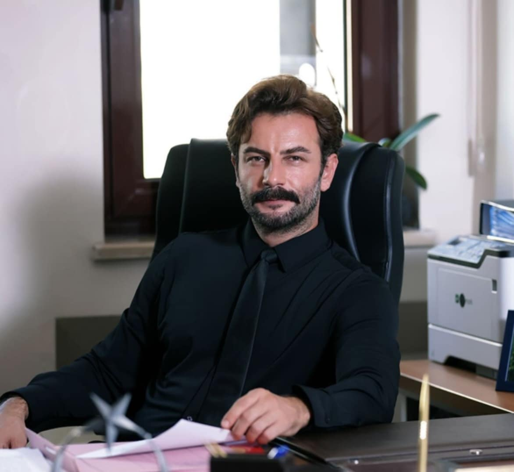Alaz Aladag (Gurur Cicekoglu)
Yalan dizisinde Alaz Aladağ karakteri gerçekten de "manyak" ya da "tehlikeli" bir karakter olarak tanımlanabilir. Alaz, oldukça karanlık bir kişiliğe sahip, manipülatif ve duygusal anlamda çok acımasız bir karakterdir. Hedeflerine ulaşmak için her türlü yöntemi kullanabilen ve etrafındaki insanları kolayca manipüle eden biri olarak diziye büyük bir gerilim katmaktadır.
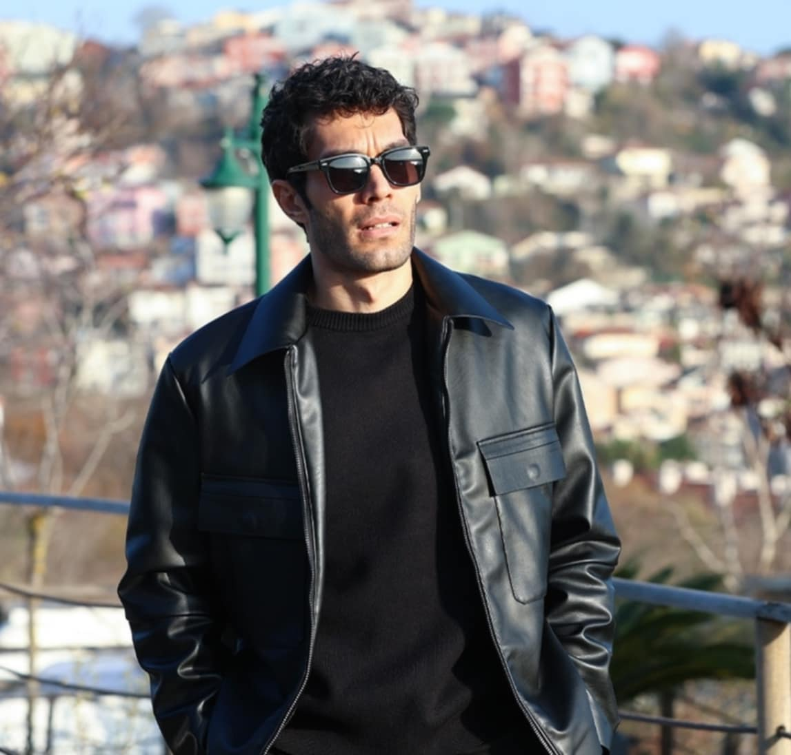